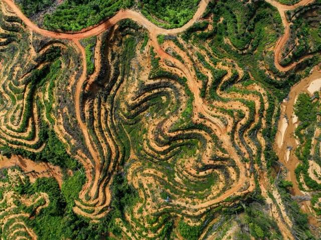
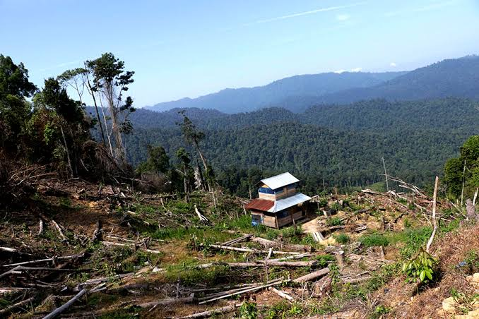

Jantung Warisan Dunia Sumatra & Arsitektur Komputasi GEE
Diresmikan sebagai salah satu dari lima taman nasional pertama di Indonesia pada 6 Maret 1980 (Pengumuman Mentan No. 811/Kpts/Um/II/1980), TNGL menjadi inti pengelolaan Kawasan Ekosistem Leuser (KEL) melalui Keppres No. 33 Tahun 1998 dan tercatat sebagai Situs Warisan Dunia UNESCO (Tropical Rainforest Heritage of Sumatra, 2004). Dari penunjukan awal seluas ±1,09 juta Ha (SK Menhut 276/1997), penetapan kawasan hutan tahun 2014 menghasilkan luas resmi TNGL sekitar 830.268,95 Ha—dengan 625.115 Ha di Provinsi Aceh—di tengah bentang KEL seluas ±2,28 juta Ha.
Untuk menguji rantai penalaran “hutan → karbon → pendinginan → tekanan terhadap manusia” pada platform Google Earth Engine (GEE) dan Python Geospasial (proyeksi EPSG:4326), batas wilayah (KEL_Aceh, toleransi penyederhanaan 500 m) dibagi menjadi tiga unit geometri:
- Zona Inti TNGL (
tngl_geom): Poligon kawasan konservasi inti sebagai wilayah kontrol tutupan hutan terlindungi. - Zona Penyangga Total (
buffer_geom): Perluasan radius 100.000 meter (100 km) mengelilingi batas terluar TNGL sebagai lanskap pengaruh ekologis regional. - Zona Penyangga Eksternal (
outside_buffer_geom): Selisih spasial antara buffer 100 km dan zona inti TNGL yang merepresentasikan area permukiman, perkebunan, serta alih fungsi lahan.
| Komponen & Aset GEE | Produk / Resolusi | Peran & Prapemrosesan |
|---|---|---|
| Optik & Tutupan Lahan Sentinel-2 SR + Cloud Score+ |
S2_SR_HARMONIZED10–20 m |
Komposit median bebas awan (cs_cdf ≥ 0,5) untuk indeks vegetasi, kelembapan, air, dan tanah terbuka. |
| Termal & Terbangun Landsat 8/9 C02 L2 |
LC08/C02/T1_L2100 m (resampel 30 m) |
Penapisan awan/bayangan via bit ke-3 & ke-4 QA_PIXEL; ekstraksi LST, UHI, UTFVI, dan NDBI. |
| Radar Kanopi (SAR) Sentinel-1 GRD IW |
Polarisasi VH (10 m) Lintasan DESCENDING |
Menangkap struktur kanopi 3D menembus awan; lintasan tunggal mencegah distorsi lereng (foreshortening/layover). |
| Topografi, Cahaya Malam & LiDAR | NASADEM (30 m), VIIRS DNB, NASA GEDI L4B (1 km) | Kontrol gradien suhu altitudinal (lapse rate ±6,5 °C/km), intensitas ekonomi, serta target kalibrasi biomassa independen. |
| Aksesibilitas & Poligon Hutan | DSS_fixkel19/21/25 & erase_non_kel19/21/25 |
Gradien jarak Euclidean: Dist_Road (50 km), Dist_Facility (50 km), dan Dist_To_TNGL (150 km). |
19 Band Biofisik Terpadu & Potret Deforestasi Aceh
Setiap komposit tahunan (2019, 2021, 2025) dan 28 kuartal menurunkan 19 band terpadu dengan penapisan badan air berbasis MNDWI < 0. Estimasi biomassa menggunakan pendekatan hibrida optik–SAR yang dibatasi pada rentang 0–500 Ton/Ha sebelum dikalibrasi terhadap LiDAR NASA GEDI L4B:
(ST_B10 × 0,00341802 + 149,0) − 273,15
UHI = (LST − μ) / σ | UTFVI = (LST − μ) / (LST + 273,15)
NDVI < 0,2 ? 0 : exp(3,0 × NDVI) × 10 + (VH + 30) × 2
CS = 0,5 × AGB | Rate = (CS₂₀₂₅ − CS₂₀₁₉) / 6
Berdasarkan integrasi poligon tutupan hutan multi-tahun (DSS_fixkel & erase_non_kel) dan deteksi kehilangan tutupan pohon (Hansen GFC), terdeteksi kehilangan hutan seluas 31.745,90 Ha sepanjang 2019–2025, atau berkisar ±4.500–5.300 Ha/tahun (dihitung dari 7 tahun hingga 6 interval). Sebagai pembanding historis, proyek REDD KEL mencatat laju deforestasi sekitar 5.500 Ha/tahun pada 2000–2009 akibat pembukaan jalan, jaringan listrik, bendungan, pertambangan, dan perluasan perkebunan sawit.
Potret Kondisi Deforestasi & Tekanan Tutupan Lahan Aceh
Klik pada setiap foto dokumentasi di bawah untuk memperbesar tampilan dan melihat keterangan lapangan.

assets/deforestasi-aceh-1.jpg

assets/deforestasi-aceh-2.jpg

assets/deforestasi-aceh-3.jpg
Dist_Road) di hulu daerah aliran sungai.

assets/deforestasi-aceh-4.jpg
Forest₂₀₁₉ = 1 → Forest₂₀₂₅ = 0) belum dipisahkan secara spasial antara zona dalam TNGL dan zona luar buffer. Pemisahan tegas dua zona ini merupakan bukti paling langsung efektivitas perlindungan kawasan.
Kapasitas Penyimpanan Karbon Kawasan Inti vs. Luar Buffer
Pengujian hipotesis membandingkan 1.500 titik sampel acak di dalam inti TNGL (Inside_TNGL) melawan 1.500 titik sampel terstratifikasi pada daratan non-hutan (MNDWI < 0) di luar batas TNGL (Outside_NonForest) pada resolusi 1.000 m (seed = 42). Uji beda Welch’s Independent Two-Sample T-Test (equal_var = False, dipilih karena ragam ekosistem hutan primer berbeda dengan permukiman) membuktikan perbedaan signifikan pada seluruh indikator utama:
| Indikator Biofisik | Dalam TNGL | Luar Buffer | Selisih & Statistik Uji |
|---|---|---|---|
| Carbon Stock (Ton/Ha) |
64,48 | 57,10 | +7,38 (+12,9%) t = 11,7848; p = 4,07×10⁻²⁹ |
| Suhu Permukaan LST (°C) |
22,61 °C | 27,90 °C | −5,29 °C t = −19,5547; p = 5,14×10⁻⁷⁰ |
| Indeks Terbangun NDBI (nir-satuan) |
−0,2080 | −0,1807 | −0,0273 t = −13,0139 (efek kecil) |
| UTFVI & UHI (Stres Termal) |
Lebih rendah | Lebih tinggi | Signifikan Tanpa tekanan termal di inti |
Interpretasi Kritis Nilai Karbon: Nilai absolut 64,48 Ton/Ha lebih moderat dibandingkan rerata stok karbon tertimbang proyek REDD KEL (~207 tC/Ha atau 760 tCO₂e/Ha) maupun studi plot alometrik hutan hujan Bukit Lawang (Auliah & Onrizal 2020) akibat perbedaan cakupan biomassa atas permukaan vs. stok total, dominasi hutan pegunungan, serta efek pencampuran piksel (mixed pixel). Sementara itu, selisih moderat +12,9% menandakan zona luar buffer belum terdegradasi penuh dan masih didominasi agroforestri, kebun campuran, serta hutan sekunder.
Pendinginan Suhu Permukaan (−5,29 °C) & Fase Awal NDBI
Sinyal terkuat dalam data terlihat pada suhu permukaan (LST): kawasan dalam TNGL lebih sejuk −5,29 °C dibandingkan zona luar (22,61 °C vs. 27,90 °C; t = −19,5547; p = 5,14×10⁻⁷⁰), disertai indeks Pulau Bahang (UHI) dan stres termal (UTFVI) yang rendah di area inti hutan.
Pemisahan Efek Hutan vs. Topografi: Karena suhu udara turun sekitar 6,5 °C per kenaikan 1 km (lapse rate), perbedaan elevasi sekitar 800 meter antara kawasan inti TNGL di pegunungan dan permukiman di dataran rendah sudah dapat menjelaskan sebagian besar selisih 5,29 °C. Model regresi linier berganda Ordinary Least Squares (OLS) pada 2.000 sampel buffer 100 km—menggunakan delapan variabel fisik teruji multikolinearitas (Elevation, Slope, Dist_Road, Dist_To_TNGL, NDVI, NDMI, NDBI, dan Nighttime_Lights dengan kriteria VIF < 5)—menghasilkan R² = 0,3871. Artinya, elevasi dan kehijauan vegetasi terbukti mengendalikan LST, sementara ~61% variasi suhu sisanya dipengaruhi albedo, kelembapan tanah, aspek lereng, emisivitas, dan tutupan awan.
Peluang Intervensi pada Zona NDBI: Nilai NDBI kedua zona sama-sama negatif (−0,2080 vs. −0,1807; selisih −0,0273), menandakan zona luar berada pada tahap awal tekanan konversi lahan, bukan urbanisasi penuh—memberikan jendela intervensi perlindungan tata ruang dengan biaya sosial-ekonomi yang masih relatif terjangkau.
Emitor Neto Regional, Pemanasan 43,1% & Audit Luasan
Kuantifikasi perubahan spasial periode 2019–2025 dilakukan di GEE melalui reduksi regional luas piksel (pixelArea / 10000, skala 60 m, tileScale = 4) untuk mengukur surplus karbon (Carbon_Diff > 0), defisit karbon (Carbon_Diff < 0), pendinginan (LST_Diff < 0), pemanasan (LST_Diff > 0), dinamika kanopi (NDVI_Diff ±0,05), ekspansi terbangun (NDBI_Diff > 0,05), dan eskalasi stres panas (UTFVI_Diff > 0,005):
- Status Emitor Neto Regional: Wilayah defisit karbon seluas 3.600.596,60 Ha (51,4%) melampaui wilayah surplus karbon seluas 3.411.164,57 Ha (48,6%) dengan selisih defisit bersih sekitar ±189.432 Ha (dari total 7,01 juta Ha).
- Pemanasan Permukaan pada 43,1% Area: Meskipun pendinginan (cooling) mendominasi seluas 7.810.506,36 Ha (56,9%), sebesar 5.920.652,93 Ha (43,1%) mengalami pemanasan permukaan (warming) dari total 13,73 juta Ha.
- Kontras Inti vs. Penyangga: Fakta bahwa lanskap regional secara keseluruhan menjadi emitor neto menegaskan bahwa sebutan “benteng” hanya berlaku bila kawasan inti TNGL dipisahkan dari bentang lahan penyangga di sekitarnya.
Evaluasi Random Forest, OLS, LSTM & Inferensi Kausal
Dirancang dengan 200 pohon keputusan (random_state = 42, 14 prediktor multi-sensor, pembagian 80% latih : 20% uji) terkalibrasi terhadap 2.000 titik LiDAR independen NASA GEDI L4B (GEDI_AGB > 0). Galat rerata ±0,8% (MAE = 0,5209 Ton/Ha; NDVI importance = 0,3786). Namun, R² yang sangat tinggi berisiko terinflasi autokorelasi spasial antar-piksel bertetangga, sirkularitas indeks NDVI, serta kejenuhan NDVI pada biomassa tinggi—sehingga wajib diuji melalui spatial block cross-validation dan plot lapangan.
Mengonfirmasi arah pengaruh elevasi dan NDVI pada 2.000 titik sampel, namun belum memadai untuk prediksi tunggal. Residu spasial perlu diuji menggunakan Moran’s I dan dikembangkan ke Geographically Weighted Regression (GWR).
Memodelkan 200 titik pemantauan kuartalan (Q1 2019–Q4 2025) untuk 8 fitur (NDVI, EVI, NDMI, LST, NDBI, UHI, UTFVI, SAR_VH) dengan pemisahan 80:20 sebelum MinMaxScaler agar bebas kebocoran data. Arsitektur LSTM(64, return_sequences=True) → Dropout(0,2) → LSTM(32) → Dense(1) (25 epoch, batch_size = 16, Adam, MSE) memerlukan walk-forward validation, baseline ARIMA/persistence, serta pelaporan metrik RMSE dan MAE (°C) pada data uji.
| Klaim Evaluasi | Kekuatan Bukti | Keterbatasan & Tindak Lanjut |
|---|---|---|
| Karbon lebih tinggi di dalam TNGL +7,38 Ton/Ha; t = 11,78 |
Sedang–Kuat | Definisi variabel & resolusi; perlu validasi plot lapangan/GEDI. |
| Iklim mikro lebih sejuk di dalam TNGL LST −5,29 °C; UTFVI rendah |
Kuat (Arah), Lemah (Kausal) | Tercampur efek elevasi (lapse rate); R² OLS = 0,39. |
| Tekanan konversi lebih rendah NDBI −0,2080 vs −0,1807 |
Sedang | Ukuran efek kecil (selisih −0,0273); fase awal konversi. |
| TNGL mencegah deforestasi Total hilang 31.745,9 Ha |
Belum Dapat Dinilai | Belum dipisahkan piksel dalam vs. luar batas TNGL. |
| Sistem monitoring ML/DL andal R² RF = 0,9994; LSTM terlatih |
Belum Terbukti | Belum ada spatial cross-validation & metrik uji LSTM. |
Dampak bagi 690.000 Jiwa & Arah Kebijakan Penyangga
Sekitar 690.000 penduduk tinggal di dalam atau berdekatan dengan KEL, sebagian termasuk kelompok ekonomi rentan. Pelajaran dari studi konversi rawa gambut Tripa (Tata et al. 2014) menegaskan bahwa penegakan hukum dan pembayaran karbon saja tidak cukup tanpa investasi mata pencaharian alternatif. Pilih sektor di bawah untuk menelusuri dampak perubahan di luar buffer:
| Perubahan di Luar Buffer | Dampak Ekonomi | Dampak Kesehatan & Bencana |
|---|---|---|
| Defisit Karbon Meluas | Hilangnya peluang pendapatan karbon & jasa lingkungan. | Kualitas udara turun bila disertai pembakaran; kapasitas hidrologi hutan melemah. |
| Pemanasan Permukaan | Produktivitas kerja luar ruang & hasil kebun menurun. | Stres panas, dehidrasi, penyakit kardiovaskular, kekeringan & kebakaran lahan. |
| Deforestasi | Pasokan air irigasi & hasil komoditas terganggu. | Perubahan habitat vektor penyakit; banjir bandang & longsor di wilayah hilir. |
6 Rekomendasi Teknis & 4 Prioritas Kebijakan
- Rekomendasi Teknis: (1) Kendalikan elevasi dan lereng melalui desain matched atau regresi berkovariat; (2) terapkan spatial block cross-validation dan validasi plot lapangan atau LiDAR GEDI; (3) laporkan ukuran efek (Cohen’s d) dan koreksi autokorelasi spasial; (4) samakan batas luasan kajian antar-analisis dan selaraskan luas TNGL dengan penetapan terbaru (±0,83 juta Ha); (5) sajikan metrik uji LSTM beserta baseline pembandingnya; serta (6) pisahkan statistik deforestasi di dalam dan di luar TNGL.
- Rekomendasi Kebijakan: (1) Perkuat patroli perlindungan di zona transisi tempat NDBI mulai meningkat; (2) integrasikan sistem peringatan dini berbasis model tervalidasi dengan patroli lapangan; (3) dorong agroforestri, perhutanan sosial, ekowisata, dan pembayaran jasa lingkungan bagi desa penyangga; serta (4) jadikan peta pemanasan dan defisit karbon sebagai dasar prioritas adaptasi kesehatan dan tata ruang.
Daftar Pustaka & Rujukan Ilmiah Utama
- Alkama R, Cescatti A. 2016. Biophysical climate impacts of recent changes in global forest cover. Science. 351(6273):600–604.
- Auliah NL, Onrizal. 2020. Stand structure and carbon storage of Bukit Lawang’s tropical rain forest of Gunung Leuser National Park. J Phys Conf Ser. 1542:012061.
- [BBTNGL] Balai Besar Taman Nasional Gunung Leuser. 2024. Laporan Kinerja Tahun 2023 Balai Besar Taman Nasional Gunung Leuser. Medan: KLHK.
- Breiman L. 2001. Random forests. Mach Learn. 45(1):5–32. | Hochreiter S, Schmidhuber J. 1997. Long short-term memory. Neural Comput. 9(8):1735–1780.
- Chave J, Réjou-Méchain M, Búrquez A, et al. 2014. Improved allometric models to estimate the aboveground biomass of tropical trees. Glob Change Biol. 20(10):3177–3190.
- Dubayah R, Blair JB, Goetz S, et al. 2020. The Global Ecosystem Dynamics Investigation (GEDI). Sci Remote Sens. 1:100002.
- Ellison D, Morris CE, Locatelli B, et al. 2017. Trees, forests and water: cool insights for a hot world. Glob Environ Change. 43:51–61.
- Gaveau DLA, Wich S, Epting J, et al. 2009. The future of forests and orangutans (Pongo abelii) in Sumatra. Environ Res Lett. 4(3):034013.
- Gorelick N, Hancher M, Dixon M, et al. 2017. Google Earth Engine: planetary-scale geospatial analysis for everyone. Remote Sens Environ. 202:18–27.
- Hansen MC, Potapov PV, Moore R, et al. 2013. High-resolution global maps of 21st-century forest cover change. Science. 342(6160):850–853.
- Kemenhut SK.4039/Menhut-VII/KUH/2014 & SK.6589/Menhut-VII/KUH/2014 tentang Penetapan Kawasan Hutan TNGL; Keppres No. 33 Tahun 1998 tentang Pengelolaan KEL; UNESCO (2004).
- Li Y, Zhao M, Motesharrei S, et al. 2015. Local cooling and warming effects of forests based on satellite observations. Nat Commun. 6:6603.
- Ploton P, Mortier F, Réjou-Méchain M, et al. 2020. Spatial validation reveals poor predictive performance of large-scale ecological mapping models. Nat Commun. 11:4540.
- Roberts DR, Bahn V, Ciuti S, et al. 2017. Cross-validation strategies for data with temporal, spatial, hierarchical, or phylogenetic structure. Ecography. 40(8):913–929.
- Tata HL, van Noordwijk M, Ruysschaert D, et al. 2014. Will funding to REDD+ stop conversion of peat swamps to oil palm in orangutan habitat in Tripa in Aceh? Mitig Adapt Strateg Glob Change. 19(6):693–713.
- Wich SA, Singleton I, Nowak MG, et al. 2016. Land-cover changes predict steep declines for the Sumatran orangutan (Pongo abelii). Sci Adv. 2(3):e1500789.